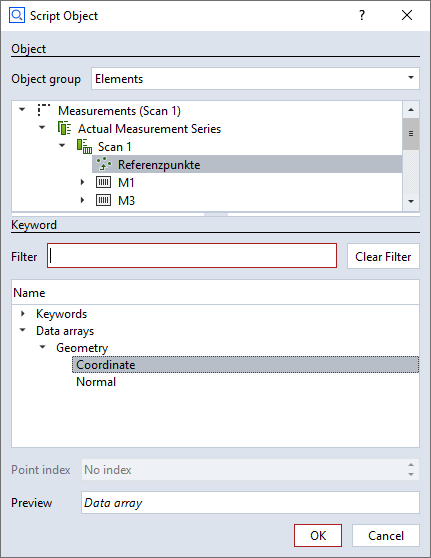
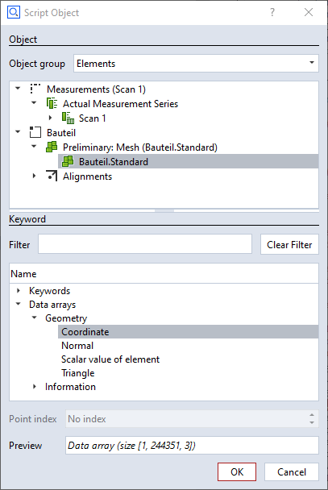
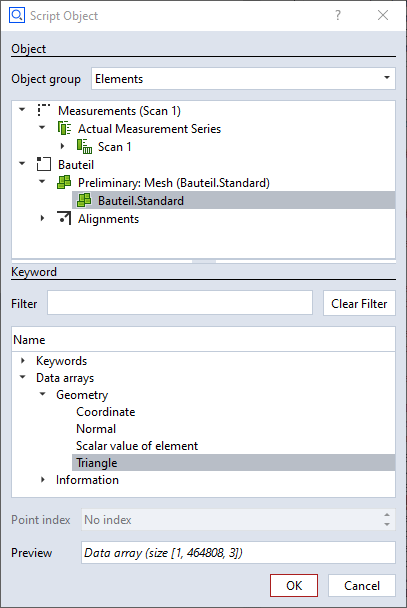
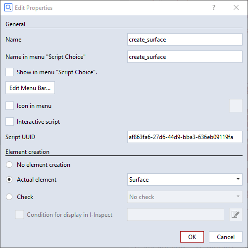

reference_points_and_mesh_data
{kind=link}
Short description
This example demonstrates how to access the reference points in a measurement and the mesh from Python. For demonstration purposes, scripted point clouds or scripted surfaces are created from both data structures, respectively.
Highlights
1. Accessing the reference points of a measurement
In the Script Object dialog, select the keyword Data arrays/Geometry/Coordinate of the reference points element:

The resulting Python data structure is a numpy-array of shape (1, <n>, 3):
- Index 0
Stage
- Index 1
Reference Points [0…<n>-1]
- Index 2
Coordinate [x, y, z]
reference_points = np.array (gom.app.project.measurement_series[MEASUREMENT_SERIES].results['points'].data.coordinate)
reference_points[0] (i.e. stage index 0) gives a 2-dimensional numpy-array of the reference points’ coordinates:
[[-235.58721273 -39.50188087 -21.06407058]
[-191.48581469 -13.62221568 -48.50181859]
...
[ 228.23743314 41.62522002 -141.81405049]]
reference_points[0].tolist() creates an ordinary Python list from the numpy-array:
[[-235.5872127320349, -39.501880871176816, -21.064070577410664],
[-191.48581468551652, -13.62221567687171, -48.50181859232822],
...,
[228.23743314034266, 41.62522001509065, -141.8140504931894]]
This can be used as input parameter to a script for creating a point cloud element:
create_point_cloud = gom.script.sys.create_element_by_script (
check_type='none',
element_type='point_cloud',
name=element_names['reference_points'],
parameters= {
'points': reference_points[0].tolist()
},
script_uuid='ff73513a-e857-43da-b4d2-382f80f25c28'
)
The function gom.script.sys.create_element_by_script() calls the script create_point_cloud.py by its script_uuid. The script_uuid can be found via the Add-on Explorer in the Script Properties (see 3. Script for creating a surface element).
2. Accessing a mesh
In the Script Object dialog, select the data structures Data arrays/Geometry/Coordinate and Data arrays/Geometry/Triangle of the mesh element:

The coordinates are the vertex points of the mesh.
The resulting Python data structure is a numpy-array of shape (1, <n>, 3):
- Index 0
Stage
- Index 1
Vertex Points [0…<n>-1]
- Index 2
Coordinate [x, y, z]
part_points = np.array (gom.app.project.parts[PART].actual.data.coordinate)
Example:
[[[-260.26819582 -55.07607781 -29.85369619]
[-260.2262357 -54.66295906 -29.56445928] # Index 1
[-260.22035056 -54.82045257 -30.00434273]
[-260.20548655 -55.16190509 -29.58630829]
[-260.19041153 -54.08518361 -29.07912709] # Index 4
[-260.18363995 -54.31011231 -29.50854346] # Index 5
...
[ 223.86296211 175.77943045 -208.493199 ]]]
Numpy-arrays can be handled very efficiently. The following code example creates a copy of the original mesh vertex points and shifts all points in Z direction by 200mm:
shifted_part_points = part_points.copy()
shifted_part_points[0, :, 2] += 200

The triangles are the edges between the vertex points. The resulting data structure is a numpy-array of shape (1, <m>, 3).
- Index 0
Stage
- Index 1
Triangle [0…<m>-1]
- Index 2
Indices into array of vertex points [indexA, indexB, indexC], which define the points A, B, C of each triangle.
part_triangles = np.array (gom.app.project.parts[PART].actual.data.triangle)
Example:
[[[ 1 4 5]
[ 3 6 0]
[ 3 7 11]
...
[244350 244335 244338]
[244350 244341 244349]
[244350 244349 244343]]]
I.e. the first row (indices into array of vertex points) defines a triangle with points IndexA=1, IndexB=4 and IndexC=5 or edges ab=(1, 4), bc=(4, 5) and ca=(5, 1).
Looking up the indexes in the array of vertex points in the example above gives the point coordinates:
A = [-260.2262357 -54.66295906 -29.56445928]
B = [-260.19041153 -54.08518361 -29.07912709]
C = [-260.18363995 -54.31011231 -29.50854346]
The arrays of vertex points and triangles can be used as input parameters to a script for creating a surface element:
create_surface = gom.script.sys.create_element_by_script (
check_type='none',
element_type='surface',
name=element_names['shifted_part_surface'],
parameters= {
'vertices': shifted_part_points[0].tolist(),
'triangles': part_triangles[0].tolist()
},
script_uuid='af863fa6-27d6-44d9-bba3-636eb09119fa'
)
3. Script for creating a surface element
The scripts create_point_cloud.py and create_surface.py are provided in the example Add-on.
Since no user interaction is required, the dialog() function shown in Introduction to scripted elements as part of the code pattern can be omitted. Consequently, the checkbox Interactive Script in the Script Properties dialog is disabled.

def calculation(context, params):
valid_results=False
# Calculating all available stages
for stage in context.stages:
# Access element properties with error handling
try:
context.result[stage] = {
'vertices': params['vertices'],
'triangles': params['triangles']
}
except Exception as error:
context.error[stage] = str(error)
else:
valid_results=True
return valid_results